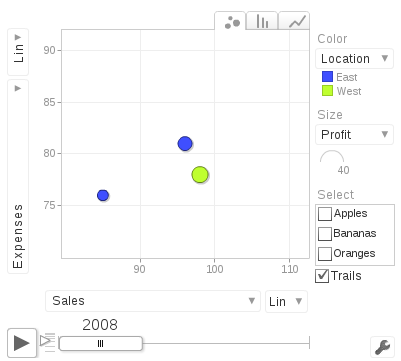

googleVis packageThe package provides an interface to Google’s chart tools, allowing users to create interactive charts based on data frames. It included maps.
The interactive maps are displayed in a browser. We can plot a complete set of interactive graphs and embed them into a web page.
Some motion charts cannot be displays in tablets and mobile phones (using HTML5) because they are rendered with Flash; Flash has to be installed on a PC.
demo(googleVis).Always cite the package:
citation("googleVis")##
## To cite the googleVis package in publications use:
##
## Markus Gesmann and Diego de Castillo. Using the Google
## Visualisation API with R. The R Journal, 3(2):40-44, December
## 2011.
##
## A BibTeX entry for LaTeX users is
##
## @Article{,
## title = {googleVis: Interface between R and the Google Visualisation API},
## author = {Markus Gesmann and Diego {de Castillo}},
## journal = {The R Journal},
## year = {2011},
## volume = {3},
## number = {2},
## pages = {40--44},
## month = {December},
## url = {https://journal.r-project.org/archive/2011-2/RJournal_2011-2_Gesmann+de~Castillo.pdf},
## }Here is an example (converted in png) of the gvisMotionChart.
suppressPackageStartupMessages(library(googleVis))
M <- gvisMotionChart(Fruits,
idvar='Fruit',
timevar='Year',
options=list(width=400, height=350))
plot(M)The results as an image:

The problem with googleVis motion chart is they only work with Flash players; PC browsers with Flash can render motion charts. Tablets and mobiles phones only render HTML5.
The next charts and maps are made of HTML, CSS, JavaScript.
Geo <- gvisGeoChart(Exports,
locationvar="Country",
colorvar="Profit",
sizevar="", # size of markers
hovervar="", # text
options=list(projection="kavrayskiy-vii"))
plot(Geo)We can even edit the results in the browser!
Editor <- gvisGeoChart(Exports,
locationvar="Country",
colorvar="Profit",
options=list(gvis.editor='Edit me!'))
Plot(Editor)Geo2 <- gvisGeoChart(CityPopularity,
locationvar='City',
colorvar='Popularity',
options=list(region='US',
height=350,
displayMode='markers',
colorAxis="{values:[200,400,600,800], colors:[\'red', \'pink\', \'orange',\'green']}"))
Plot(Geo2)CityPopularity3 <- data.frame(City = c('Montreal', 'Toronto'),
Popularity = c(700, 200))
Geo3 <- gvisGeoChart(CityPopularity3,
locationvar='City',
colorvar='Popularity',
options=list(region = 'CA',
height=350,
displayMode='markers',
colorAxis="{values:[200,400,600,800], colors:[\'red', \'pink\', \'orange',\'green']}"))
Plot(Geo3)PopTable <- gvisTable(Population,
formats=list(Population="#,###",
'% of World Population'='#.#%'),
options=list(page='enable'))
Plot(PopTable)G <- gvisGeoChart(Exports,
locationvar="Country",
colorvar="Profit",
options=list(width=300, height=200))
T <- gvisTable(Exports,
options=list(width=300, height=370))
GT <- gvisMerge(G, T, horizontal=FALSE)
Plot(GT)